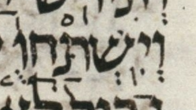

| bcv (tanach.us) | gn27:29 |
| MPK | וְיִֽשְׁתַּחֲוֻ֤ |
| qere | וְיִֽשְׁתַּחֲו֤וּ |
| at issue | וּ |
| at issue English | changed a qubuts to a shuruq |
| folio col line | 016A 2 4 |
The qubuts in the MPK becomes a shuruq dot in the qere.
Although Dotan does not note this word, he notes a later version of this word in this verse, וְיִשְׁתַּחֲוּ֥וּ. Presumably he notes this later word for the unexpected dagesh in its next-to-last vav. This later word is a normal (non-qere) word.